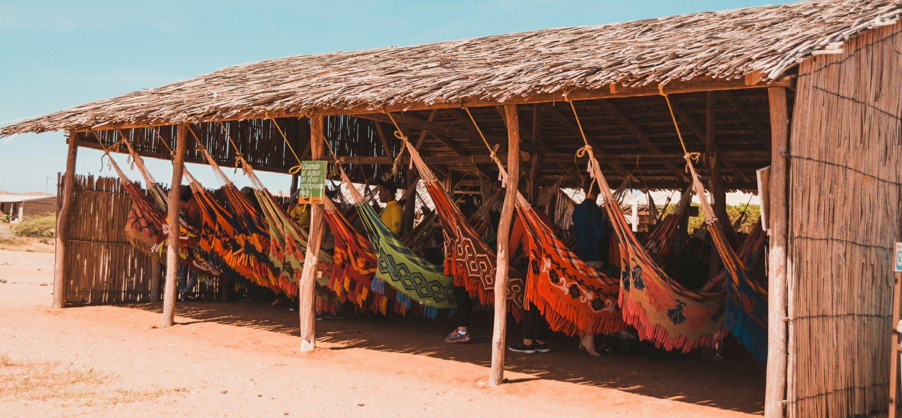
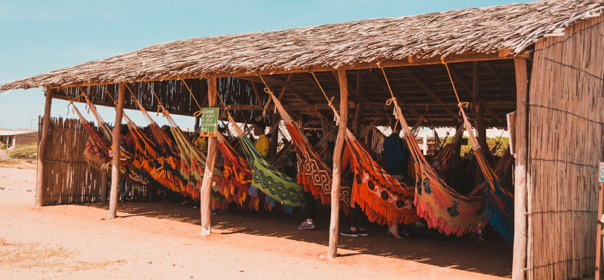

PUEBLO DE ORIGEN
WAYUU
Hijos de la lluvia y la sequía
Radiografía Social
Una mirada a la estructura demográfica y económica actual.
La etnia indígena más numerosa de Colombia y Venezuela.
Estructura matrilineal. El apellido y la herencia pasan por la madre.
Economía de subsistencia basada en chivos y recursos marinos.
Las mochilas Wayuu son su principal producto de exportación cultural.
La Palabra Sagrada
Para los Wayuu, la palabra (Pütchikalü) tiene un valor incalculable. Los conflictos no se resuelven con violencia, sino a través del Pütchipü'ü (Palabrero), un mediador que utiliza la retórica y la compensación para restaurar la armonía.
Sus sueños son mensajes de los ancestros. La realidad y el mundo onírico se entrelazan en su vida diaria, guiando decisiones sobre salud, viajes y vida comunitaria.
 

El Idioma Wayuunaiki
El Desierto Vivo
La Guajira es un territorio de contrastes extremos. Un desierto que se encuentra abruptamente con el Mar Caribe.
- ✦ Clima: Árido y seco, con vientos alisios constantes.
- ✦ Flora: Cactus, trupillos y manglares costeros.
- ✦ Desafío: La escasez de agua dulce es la lucha constante de este pueblo resiliente.